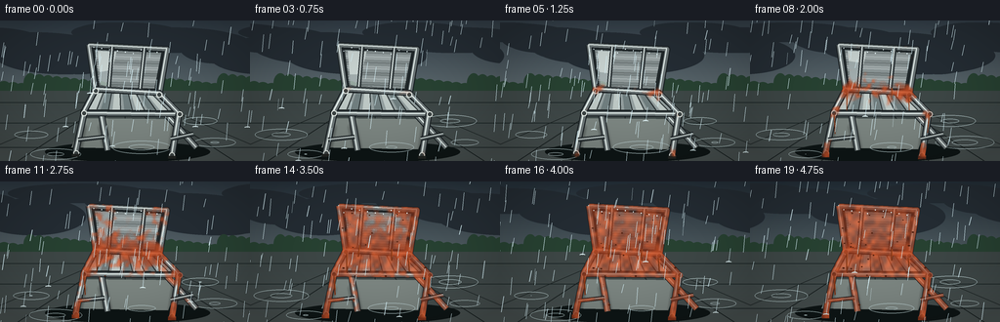
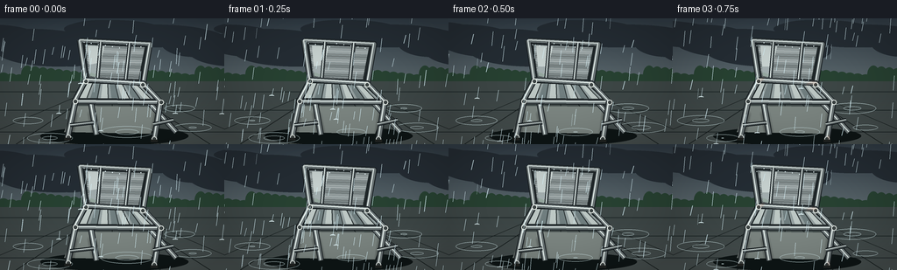

CODING AGENTS AS PIXEL WORLD MODELS
traex/GPT-5.6-Sol · phygen_158
点击播放 · 原生 RGB 像素
逐轮保存的候选
回放视频、检查图与代码变化。
每份候选均可单独播放。实际图片检查记录在下方工具轨迹中。
候选 01播放与检查图
点击播放 · 原生 RGB 像素

展开代码变化
--- 上一保存版本
+++ 本次保存版本
@@ -0,0 +1,212 @@
+from pathlib import Path
+import json, math
+import numpy as np
+from PIL import Image, ImageDraw, ImageFilter
+import artifact_io
+
+CASE = Path(__file__).resolve().parent
+SPEC = json.loads((CASE/'task_spec.json').read_text())
+W,H,N,FPS = SPEC['width'],SPEC['height'],SPEC['frames'],SPEC['fps']
+S=4
+w,h=W*S,H*S
+rng=np.random.default_rng(158)
+
+def scp(points): return [(int(x*S),int(y*S)) for x,y in points]
+def smoothstep(x):
+ x=np.clip(x,0,1); return x*x*(3-2*x)
+
+def gradient(top,bottom):
+ y=np.linspace(0,1,h)[:,None,None]
+ a=np.array(top)[None,None,:]; b=np.array(bottom)[None,None,:]
+ arr=np.repeat((a*(1-y)+b*y).astype(np.uint8),w,axis=1)
+ return Image.fromarray(arr,'RGB')
+
+def line(draw, pts, fill, width, joint='curve'):
+ draw.line(scp(pts), fill=fill, width=max(1,int(width*S)), joint=joint)
+
+def tube(draw, maskdraw, pts, width=5, dim=0):
+ # chrome tube with a dark rim, cool body, and razor highlight
+ line(draw,pts,(25+dim,31+dim,34+dim,255),width+2)
+ line(draw,pts,(103+dim,112+dim,113+dim,255),width)
+ off=[(x-0.45,y-0.30) for x,y in pts]
+ line(draw,off,(215+dim//2,225+dim//2,222+dim//2,255),max(1,width*0.32))
+ line(maskdraw,pts,255,width+1)
+
+def chair_layers(t):
+ lay=Image.new('RGBA',(w,h),(0,0,0,0)); d=ImageDraw.Draw(lay)
+ mask=Image.new('L',(w,h),0); md=ImageDraw.Draw(mask)
+ # Rear leg members (behind seat)
+ tube(d,md,[(101,66),(103,93),(110,133)],5)
+ tube(d,md,[(162,70),(170,96),(201,130)],5)
+ # back panel: dark rim + brushed stainless inset
+ back=[(91,25),(171,29),(163,76),(98,72)]
+ d.polygon(scp(back),fill=(31,38,40,255)); md.polygon(scp(back),fill=255)
+ inner=[(97,30),(165,33),(158,69),(102,66)]
+ d.polygon(scp(inner),fill=(129,140,141,255)); md.polygon(scp(inner),fill=255)
+ # brushed horizontal bands and metallic reflection
+ for yy in np.linspace(32,67,18):
+ u=(yy-30)/39
+ xl=97+5*u; xr=165-7*u
+ c=int(122+30*math.sin(yy*0.56)+20*(1-u))
+ line(d,[(xl,yy),(xr,yy+2.2)],(c,c+8,c+8,255),1.5)
+ d.polygon(scp([(100,31),(119,32),(111,67),(103,66)]),fill=(204,214,211,150))
+ # backrest tubular boundary and two slim reinforcing rails
+ tube(d,md,[(91,25),(171,29),(163,76),(98,72),(91,25)],4.6)
+ tube(d,md,[(115,27),(111,73)],2.4)
+ tube(d,md,[(148,28),(143,74)],2.4)
+ # seat pan
+ seat=[(98,70),(163,74),(184,96),(85,95)]
+ d.polygon(scp(seat),fill=(28,34,35,255)); md.polygon(scp(seat),fill=255)
+ ins=[(100,74),(160,77),(176,92),(91,91)]
+ d.polygon(scp(ins),fill=(138,149,149,255)); md.polygon(scp(ins),fill=255)
+ # seat slats with alternating specular strips
+ for k in range(7):
+ a=k/7; b=(k+0.66)/7
+ p=[(100+(160-100)*a,74+(77-74)*a),
+ (100+(160-100)*b,74+(77-74)*b),
+ (91+(176-91)*b,91+(92-91)*b),
+ (91+(176-91)*a,91+(92-91)*a)]
+ col=(178,188,185,255) if k%2==0 else (106,119,120,255)
+ d.polygon(scp(p),fill=col); md.polygon(scp(p),fill=255)
+ line(d,[p[1],p[2]],(37,44,45,255),1.1)
+ # seat edge and forward legs
+ tube(d,md,[(98,70),(163,74),(184,96),(85,95),(98,70)],4.7)
+ tube(d,md,[(86,94),(77,136)],5.2)
+ tube(d,md,[(183,95),(176,138)],5.2)
+ # lower side braces
+ tube(d,md,[(80,122),(107,119)],2.7,dim=-7)
+ tube(d,md,[(175,121),(198,116)],2.7,dim=-7)
+ # joints/caps
+ for x,y in [(98,72),(163,76),(86,95),(184,96),(78,136),(176,138)]:
+ d.ellipse((int((x-3)*S),int((y-3)*S),int((x+3)*S),int((y+3)*S)),fill=(57,64,64,255),outline=(217,223,218,255),width=S)
+ md.ellipse((int((x-3)*S),int((y-3)*S),int((x+3)*S),int((y+3)*S)),fill=255)
+ # little floor shoes
+ line(d,[(73.5,138),(81,138)],(31,34,32,255),3)
+ line(d,[(172,140),(180,140)],(31,34,32,255),3)
+ line(md,[(73.5,138),(81,138)],255,4)
+ line(md,[(172,140),(180,140)],255,4)
+ return lay,mask
+
+# Fixed corrosion fields so rust grows rather than flickers.
+yy,xx=np.mgrid[0:h,0:w]; X=xx/S; Y=yy/S
+# multiscale cloudy noise, generated small then expanded
+small=rng.random((36,64)).astype(np.float32)
+cloud=np.asarray(Image.fromarray((small*255).astype('uint8')).resize((w,h),Image.Resampling.BICUBIC),dtype=np.float32)/255
+fine=rng.random((h,w)).astype(np.float32)
+score=.40*cloud+.20*fine
+# corrosion preferentially begins at welds, seams, feet, exposed panel edge
+for cx,cy,sig,amp in [(98,72,8,.75),(163,76,8,.78),(86,95,8,.75),(184,96,8,.77),
+ (78,135,12,.85),(176,137,12,.88),(101,29,12,.38),(165,31,11,.42),
+ (112,63,12,.38),(145,70,12,.43),(131,76,18,.35)]:
+ score += amp*np.exp(-((X-cx)**2+(Y-cy)**2)/(2*sig*sig))
+score=np.clip(score/1.35,0,1)
+activation=.11+.72*(1-score) + .05*(rng.random((h,w))-.5)
+# fixed rust pigment texture
+rust_rgb=np.zeros((h,w,4),dtype=np.uint8)
+rust_rgb[...,0]=np.clip(112+86*cloud+18*fine,0,255)
+rust_rgb[...,1]=np.clip(42+42*cloud,0,255)
+rust_rgb[...,2]=np.clip(20+20*cloud,0,255)
+
+# fixed rain particles: varying depth, continuously wrap down screen
+rain=[]
+for i in range(180):
+ rain.append((rng.uniform(-40,270),rng.uniform(-150,150),rng.uniform(.45,1),rng.uniform(8,18)))
+
+frames=[]
+for fi in range(N):
+ t=fi/(N-1)
+ # subtle long-period storm light cycle while preserving continuity
+ light=8*math.sin(2*math.pi*(t*.72+.05))
+ top=np.array((42,53,62))+light; bot=np.array((119,132,133))+light
+ im=gradient(tuple(top.astype(int)),tuple(bot.astype(int))).convert('RGBA')
+ d=ImageDraw.Draw(im,'RGBA')
+ # heavy layered storm clouds
+ for j in range(14):
+ cx=((j*47 + 14*fi)%390)-60; cy=12+(j%4)*8
+ rw=38+(j%3)*17; rh=10+(j%4)*3
+ d.ellipse((int((cx-rw)*S),int((cy-rh)*S),int((cx+rw)*S),int((cy+rh)*S)),fill=(35,43,50,38))
+ # blurred distant hedge and fence
+ line(d,[(0,69),(256,69)],(41,56,50,255),4)
+ for x in range(-5,265,9):
+ hh=5+((x*17)%11)
+ d.ellipse((int((x-7)*S),int((69-hh)*S),int((x+7)*S),int(75*S)),fill=(38,63,48,220))
+ # patio ground, glossy from rain
+ d.rectangle((0,72*S,w,h),fill=(56,65,65,255))
+ # ground vertical gradient overlay
+ ground=Image.new('RGBA',(w,h),(0,0,0,0)); ga=np.zeros((h,w,4),dtype=np.uint8)
+ gy=np.arange(h)[:,None]/S
+ ga[...,0]=91; ga[...,1]=98; ga[...,2]=96
+ ga[...,3]=np.where(gy>=72,np.clip((gy-72)*1.35,20,92),0).astype(np.uint8)
+ ground=Image.fromarray(ga,'RGBA'); im=Image.alpha_composite(im,ground); d=ImageDraw.Draw(im,'RGBA')
+ # paving seams in perspective
+ for yv in [84,105,130]: line(d,[(0,yv),(256,yv)],(25,34,35,100),.8)
+ for xb in [-40,18,73,128,183,240,297]: line(d,[(128,72),(xb,144)],(24,31,31,85),.8)
+ # broad chair shadow and wet reflection
+ d.ellipse((46*S,124*S,215*S,145*S),fill=(13,20,20,95))
+ d.polygon(scp([(86,100),(184,101),(172,132),(73,130)]),fill=(118,127,123,18))
+ # puddles with passing concentric rain ripples
+ for k,(cx,cy) in enumerate([(32,117),(220,125),(57,137),(145,130),(205,103)]):
+ phase=(fi*1.7+k*2.3)%9
+ for q in range(2):
+ rr=phase+q*9
+ if rr<16:
+ d.ellipse((int((cx-rr*1.9)*S),int((cy-rr*.42)*S),int((cx+rr*1.9)*S),int((cy+rr*.42)*S)),outline=(181,201,202,max(0,int(115-rr*6))),width=max(1,S//2))
+ # soft reflection of chair legs
+ refl=Image.new('RGBA',(w,h),(0,0,0,0)); rd=ImageDraw.Draw(refl)
+ for pts in [[(78,137),(84,108)],[(176,139),(181,105)],[(110,132),(105,108)],[(201,130),(184,105)]]:
+ line(rd,pts,(121,133,130,34),4)
+ refl=refl.filter(ImageFilter.GaussianBlur(2*S)); im=Image.alpha_composite(im,refl)
+ # Chair clean metal geometry
+ chair,metalmask=chair_layers(t)
+ im=Image.alpha_composite(im,chair)
+ # progressive corrosion, no corrosion at first frame
+ grow=smoothstep((t-activation)/.20)
+ # At late stages even low-susceptibility areas acquire a mottled patina.
+ alpha=(grow*(135+95*score)).astype(np.uint8)
+ alpha=np.minimum(alpha,np.asarray(metalmask,dtype=np.uint8))
+ rust=rust_rgb.copy(); rust[...,3]=alpha
+ im=Image.alpha_composite(im,Image.fromarray(rust,'RGBA'))
+ d=ImageDraw.Draw(im,'RGBA')
+ # dark pitting and downward rust-water trails emerge in later periods
+ if t>.28:
+ amount=smoothstep((t-.28)/.55)
+ for k,(x,y,leng) in enumerate([(99,74,18),(162,78,14),(112,65,12),(145,69,12),(86,97,19),(183,98,17)]):
+ wob=math.sin(k*2.1)*1.2
+ line(d,[(x,y),(x+wob,y+leng)],(116,47,19,int(105*amount)),.7+amount*.6)
+ line(d,[(x+.7,y),(x+wob+.7,y+leng*.7)],(220,101,39,int(65*amount)),.35)
+ # orange rough flakes at mature stage
+ if t>.5:
+ for k in range(int(55*(t-.5)*2)):
+ rr=np.random.default_rng(900+k)
+ x0=rr.uniform(75,188); y0=rr.uniform(28,138)
+ if metalmask.getpixel((min(w-1,int(x0*S)),min(h-1,int(y0*S))))>0:
+ r=rr.uniform(.3,1.25)
+ d.ellipse((int((x0-r)*S),int((y0-r*.55)*S),int((x0+r)*S),int((y0+r*.55)*S)),fill=(74,29,13,int(90+100*t)))
+ # rain behind/front chair: coherent fast diagonal travel
+ for k,(x0,y0,depth,leng) in enumerate(rain):
+ speed=(19+34*depth)
+ y=(y0+fi*speed)%220-45
+ x=(x0-fi*(2.2+3.8*depth)+((y0+fi*speed)//220)*29)%320-32
+ a=int(45+105*depth)
+ lw=max(1,int((.28+.48*depth)*S))
+ d.line((int(x*S),int(y*S),int((x-2.4*depth)*S),int((y+leng)*S)),fill=(202,226,232,a),width=lw)
+ # small splash when drop reaches patio
+ if 72<y+leng<145 and (k+fi)%17==0:
+ sx=x-2.4*depth; sy=y+leng
+ d.arc((int((sx-3)*S),int((sy-1)*S),int((sx+3)*S),int((sy+1.2)*S)),180,355,fill=(215,233,235,130),width=1*S)
+ # beads of water catch light along top rails
+ for k in range(9):
+ x=96+k*8.1; y=27+(x-91)*.05
+ drift=(fi*1.4+k*.9)%5
+ d.ellipse((int((x-.45)*S),int((y+drift-.5)*S),int((x+.45)*S),int((y+drift+.5)*S)),fill=(229,243,245,135))
+ # vignette and filmic contrast
+ arr=np.asarray(im.convert('RGB'),dtype=np.float32)
+ YN=(np.arange(h)[:,None]-h/2)/(h/2); XN=(np.arange(w)[None,:]-w/2)/(w/2)
+ vig=np.clip(1-.15*(XN*XN+YN*YN),.76,1)[...,None]
+ arr=np.clip((arr-10)*1.07*vig+10,0,255).astype(np.uint8)
+ out=Image.fromarray(arr,'RGB').resize((W,H),Image.Resampling.LANCZOS)
+ frames.append(np.asarray(out,dtype=np.uint8))
+
+frames=np.stack(frames)
+artifact_io.save(frames,CASE)
+print(f'saved {frames.shape} {frames.dtype} to {CASE}')
可观测工具轨迹
实际执行的命令与返回图片。
命令 1exit 0
/bin/bash -lc "cat prompt.txt && printf '\\n--- GENERATION_RULES.md ---\\n' && cat GENERATION_RULES.md"
命令 2exit 0
/bin/bash -lc "cat task_spec.json && printf '\\n--- files ---\\n' && find . -maxdepth 2 -type f -printf '%p %s bytes\\n' | sort"
命令 3exit 0
/bin/bash -lc 'cat artifact_io.py'
命令 4exit 0
/bin/bash -lc "cat > generate.py <<'PY'
from pathlib import Path
import json, math
import numpy as np
from PIL import Image, ImageDraw, ImageFilter
import artifact_io
CASE = Path(__file__).resolve().parent
SPEC = json.loads((CASE/'task_spec.json').read_text())
W,H,N,FPS = SPEC['width'],SPEC['height'],SPEC['frames'],SPEC['fps']
S=4
w,h=W*S,H*S
rng=np.random.default_rng(158)
def scp(points): return [(int(x*S),int(y*S)) for x,y in points]
def smoothstep(x):
x=np.clip(x,0,1); return x*x*(3-2*x)
def gradient(top,bottom):
y=np.linspace(0,1,h)[:,None,None]
a=np.array(top)[None,None,:]; b=np.array(bottom)[None,None,:]
arr=np.repeat((a*(1-y)+b*y).astype(np.uint8),w,axis=1)
return Image.fromarray(arr,'RGB')
def line(draw, pts, fill, width, joint='curve'):
draw.line(scp(pts), fill=fill, width=max(1,int(width*S)), joint=joint)
def tube(draw, maskdraw, pts, width=5, dim=0):
# chrome tube with a dark rim, cool body, and razor highlight
line(draw,pts,(25+dim,31+dim,34+dim,255),width+2)
line(draw,pts,(103+dim,112+dim,113+dim,255),width)
off=[(x-0.45,y-0.30) for x,y in pts]
line(draw,off,(215+dim//2,225+dim//2,222+dim//2,255),max(1,width*0.32))
line(maskdraw,pts,255,width+1)
def chair_layers(t):
lay=Image.new('RGBA',(w,h),(0,0,0,0)); d=ImageDraw.Draw(lay)
mask=Image.new('L',(w,h),0); md=ImageDraw.Draw(mask)
# Rear leg members (behind seat)
tube(d,md,[(101,66),(103,93),(110,133)],5)
tube(d,md,[(162,70),(170,96),(201,130)],5)
# back panel: dark rim + brushed stainless inset
back=[(91,25),(171,29),(163,76),(98,72)]
d.polygon(scp(back),fill=(31,38,40,255)); md.polygon(scp(back),fill=255)
inner=[(97,30),(165,33),(158,69),(102,66)]
d.polygon(scp(inner),fill=(129,140,141,255)); md.polygon(scp(inner),fill=255)
# brushed horizontal bands and metallic reflection
for yy in np.linspace(32,67,18):
u=(yy-30)/39
xl=97+5*u; xr=165-7*u
c=int(122+30*math.sin(yy*0.56)+20*(1-u))
line(d,[(xl,yy),(xr,yy+2.2)],(c,c+8,c+8,255),1.5)
d.polygon(scp([(100,31),(119,32),(111,67),(103,66)]),fill=(204,214,211,150))
# backrest tubular boundary and two slim reinforcing rails
tube(d,md,[(91,25),(171,29),(163,76),(98,72),(91,25)],4.6)
tube(d,md,[(115,27),(111,73)],2.4)
tube(d,md,[(148,28),(143,74)],2.4)
# seat pan
seat=[(98,70),(163,74),(184,96),(85,95)]
d.polygon(scp(seat),fill=(28,34,35,255)); md.polygon(scp(seat),fill=255)
ins=[(100,74),(160,77),(176,92),(91,91)]
d.polygon(scp(ins),fill=(138,149,149,255)); md.polygon(scp(ins),fill=255)
# seat slats with alternating specular strips
for k in range(7):
a=k/7; b=(k+0.66)/7
p=[(100+(160-100)*a,74+(77-74)*a),
(100+(160-100)*b,74+(77-74)*b),
(91+(176-91)*b,91+(92-91)*b),
(91+(176-91)*a,91+(92-91)*a)]
col=(178,188,185,255) if k%2==0 else (106,119,120,255)
d.polygon(scp(p),fill=col); md.polygon(scp(p),fill=255)
line(d,[p[1],p[2]],(37,44,45,255),1.1)
# seat edge and forward legs
tube(d,md,[(98,70),(163,74),(184,96),(85,95),(98,70)],4.7)
tube(d,md,[(86,94),(77,136)],5.2)
tube(d,md,[(183,95),(176,138)],5.2)
# lower side braces
tube(d,md,[(80,122),(107,119)],2.7,dim=-7)
tube(d,md,[(175,121),(198,116)],2.7,dim=-7)
# joints/caps
for x,y in [(98,72),(163,76),(86,95),(184,96),(78,136),(176,138)]:
d.ellipse((int((x-3)*S),int((y-3)*S),int((x+3)*S),int((y+3)*S)),fill=(57,64,64,255),outline=(217,223,218,255),width=S)
md.ellipse((int((x-3)*S),int((y-3)*S),int((x+3)*S),int((y+3)*S)),fill=255)
# little floor shoes
line(d,[(73.5,138),(81,138)],(31,34,32,255),3)
line(d,[(172,140),(180,140)],(31,34,32,255),3)
line(md,[(73.5,138),(81,138)],255,4)
line(md,[(172,140),(180,140)],255,4)
return lay,mask
# Fixed corrosion fields so rust grows rather than flickers.
yy,xx=np.mgrid[0:h,0:w]; X=xx/S; Y=yy/S
# multiscale cloudy noise, generated small then expanded
small=rng.random((36,64)).astype(np.float32)
cloud=np.asarray(Image.fromarray((small*255).astype('uint8')).resize((w,h),Image.Resampling.BICUBIC),dtype=np.float32)/255
fine=rng.random((h,w)).astype(np.float32)
score=.40*cloud+.20*fine
# corrosion preferentially begins at welds, seams, feet, exposed panel edge
for cx,cy,sig,amp in [(98,72,8,.75),(163,76,8,.78),(86,95,8,.75),(184,96,8,.77),
(78,135,12,.85),(176,137,12,.88),(101,29,12,.38),(165,31,11,.42),
(112,63,12,.38),(145,70,12,.43),(131,76,18,.35)]:
score += amp*np.exp(-((X-cx)**2+(Y-cy)**2)/(2*sig*sig))
score=np.clip(score/1.35,0,1)
activation=.11+.72*(1-score) + .05*(rng.random((h,w))-.5)
# fixed rust pigment texture
rust_rgb=np.zeros((h,w,4),dtype=np.uint8)
rust_rgb[...,0]=np.clip(112+86*cloud+18*fine,0,255)
rust_rgb[...,1]=np.clip(42+42*cloud,0,255)
rust_rgb[...,2]=np.clip(20+20*cloud,0,255)
# fixed rain particles: varying depth, continuously wrap down screen
rain=[]
for i in range(180):
rain.append((rng.uniform(-40,270),rng.uniform(-150,150),rng.uniform(.45,1),rng.uniform(8,18)))
frames=[]
for fi in range(N):
t=fi/(N-1)
# subtle long-period storm light cycle while preserving continuity
light=8*math.sin(2*math.pi*(t*.72+.05))
top=np.array((42,53,62))+light; bot=np.array((119,132,133))+light
im=gradient(tuple(top.astype(int)),tuple(bot.astype(int))).convert('RGBA')
d=ImageDraw.Draw(im,'RGBA')
# heavy layered storm clouds
for j in range(14):
cx=((j*47 + 14*fi)%390)-60; cy=12+(j%4)*8
rw=38+(j%3)*17; rh=10+(j%4)*3
d.ellipse((int((cx-rw)*S),int((cy-rh)*S),int((cx+rw)*S),int((cy+rh)*S)),fill=(35,43,50,38))
# blurred distant hedge and fence
line(d,[(0,69),(256,69)],(41,56,50,255),4)
for x in range(-5,265,9):
hh=5+((x*17)%11)
d.ellipse((int((x-7)*S),int((69-hh)*S),int((x+7)*S),int(75*S)),fill=(38,63,48,220))
# patio ground, glossy from rain
d.rectangle((0,72*S,w,h),fill=(56,65,65,255))
# ground vertical gradient overlay
ground=Image.new('RGBA',(w,h),(0,0,0,0)); ga=np.zeros((h,w,4),dtype=np.uint8)
gy=np.arange(h)[:,None]/S
ga[...,0]=91; ga[...,1]=98; ga[...,2]=96
ga[...,3]=np.where(gy>=72,np.clip((gy-72)*1.35,20,92),0).astype(np.uint8)
ground=Image.fromarray(ga,'RGBA'); im=Image.alpha_composite(im,ground); d=ImageDraw.Draw(im,'RGBA')
# paving seams in perspective
for yv in [84,105,130]: line(d,[(0,yv),(256,yv)],(25,34,35,100),.8)
for xb in [-40,18,73,128,183,240,297]: line(d,[(128,72),(xb,144)],(24,31,31,85),.8)
# broad chair shadow and wet reflection
d.ellipse((46*S,124*S,215*S,145*S),fill=(13,20,20,95))
d.polygon(scp([(86,100),(184,101),(172,132),(73,130)]),fill=(118,127,123,18))
# puddles with passing concentric rain ripples
for k,(cx,cy) in enumerate([(32,117),(220,125),(57,137),(145,130),(205,103)]):
phase=(fi*1.7+k*2.3)%9
for q in range(2):
rr=phase+q*9
if rr<16:
d.ellipse((int((cx-rr*1.9)*S),int((cy-rr*.42)*S),int((cx+rr*1.9)*S),int((cy+rr*.42)*S)),outline=(181,201,202,max(0,int(115-rr*6))),width=max(1,S//2))
# soft reflection of chair legs
refl=Image.new('RGBA',(w,h),(0,0,0,0)); rd=ImageDraw.Draw(refl)
for pts in [[(78,137),(84,108)],[(176,139),(181,105)],[(110,132),(105,108)],[(201,130),(184,105)]]:
line(rd,pts,(121,133,130,34),4)
refl=refl.filter(ImageFilter.GaussianBlur(2*S)); im=Image.alpha_composite(im,refl)
# Chair clean metal geometry
chair,metalmask=chair_layers(t)
im=Image.alpha_composite(im,chair)
# progressive corrosion, no corrosion at first frame
grow=smoothstep((t-activation)/.20)
# At late stages even low-susceptibility areas acquire a mottled patina.
alpha=(grow*(135+95*score)).astype(np.uint8)
alpha=np.minimum(alpha,np.asarray(metalmask,dtype=np.uint8))
rust=rust_rgb.copy(); rust[...,3]=alpha
im=Image.alpha_composite(im,Image.fromarray(rust,'RGBA'))
d=ImageDraw.Draw(im,'RGBA')
# dark pitting and downward rust-water trails emerge in later periods
if t>.28:
amount=smoothstep((t-.28)/.55)
for k,(x,y,leng) in enumerate([(99,74,18),(162,78,14),(112,65,12),(145,69,12),(86,97,19),(183,98,17)]):
wob=math.sin(k*2.1)*1.2
line(d,[(x,y),(x+wob,y+leng)],(116,47,19,int(105*amount)),.7+amount*.6)
line(d,[(x+.7,y),(x+wob+.7,y+leng*.7)],(220,101,39,int(65*amount)),.35)
# orange rough flakes at mature stage
if t>.5:
for k in range(int(55*(t-.5)*2)):
rr=np.random.default_rng(900+k)
x0=rr.uniform(75,188); y0=rr.uniform(28,138)
if metalmask.getpixel((min(w-1,int(x0*S)),min(h-1,int(y0*S))))>0:
r=rr.uniform(.3,1.25)
d.ellipse((int((x0-r)*S),int((y0-r*.55)*S),int((x0+r)*S),int((y0+r*.55)*S)),fill=(74,29,13,int(90+100*t)))
# rain behind/front chair: coherent fast diagonal travel
for k,(x0,y0,depth,leng) in enumerate(rain):
speed=(19+34*depth)
y=(y0+fi*speed)%220-45
x=(x0-fi*(2.2+3.8*depth)+((y0+fi*speed)//220)*29)%320-32
a=int(45+105*depth)
lw=max(1,int((.28+.48*depth)*S))
d.line((int(x*S),int(y*S),int((x-2.4*depth)*S),int((y+leng)*S)),fill=(202,226,232,a),width=lw)
# small splash when drop reaches patio
if 72<y+leng<145 and (k+fi)%17==0:
sx=x-2.4*depth; sy=y+leng
d.arc((int((sx-3)*S),int((sy-1)*S),int((sx+3)*S),int((sy+1.2)*S)),180,355,fill=(215,233,235,130),width=1*S)
# beads of water catch light along top rails
for k in range(9):
x=96+k*8.1; y=27+(x-91)*.05
drift=(fi*1.4+k*.9)%5
d.ellipse((int((x-.45)*S),int((y+drift-.5)*S),int((x+.45)*S),int((y+drift+.5)*S)),fill=(229,243,245,135))
# vignette and filmic contrast
arr=np.asarray(im.convert('RGB'),dtype=np.float32)
YN=(np.arange(h)[:,None]-h/2)/(h/2); XN=(np.arange(w)[None,:]-w/2)/(w/2)
vig=np.clip(1-.15*(XN*XN+YN*YN),.76,1)[...,None]
arr=np.clip((arr-10)*1.07*vig+10,0,255).astype(np.uint8)
out=Image.fromarray(arr,'RGB').resize((W,H),Image.Resampling.LANCZOS)
frames.append(np.asarray(out,dtype=np.uint8))
frames=np.stack(frames)
artifact_io.save(frames,CASE)
print(f'saved {frames.shape} {frames.dtype} to {CASE}')
PY
python generate.py"命令 5exit 0
/bin/bash -lc "python - <<'PY'
from pathlib import Path
import numpy as np, json
p=Path('.')
s=json.loads((p/'task_spec.json').read_text())
z=np.load(p/'pixels.npz')['pixels']
print('pixels:',z.shape,z.dtype,'expected H,W,N:',(s['height'],s['width'],s['frames']))
fs=sorted((p/'frames').glob('*.png'))
print('frames:',len(fs),fs[0].name,fs[-1].name)
print('artifacts:',[(x.name,x.stat().st_size) for x in [p/'pixels.npz',p/'index.html',p/'inspection.png',p/'transition_check.png',p/'generate.py']])
# quantify visual evolution and adjacent-frame motion
rgb=np.stack([((z[:,:,i,None] >> np.array([16,8,0])) & 255).astype(np.uint8) for i in range(z.shape[2])])
print('mean abs first->last:',float(np.abs(rgb[-1].astype(int)-rgb[0].astype(int)).mean()))
print('adjacent MAD min/mean/max:', *(float(x) for x in (lambda a:(a.min(),a.mean(),a.max()))(np.abs(np.diff(rgb.astype(np.int16),axis=0)).mean((1,2,3)))))
PY"视觉工具实际返回图片 1

视觉工具实际返回图片 2

保存候选 1 份；完成命令 5 次；可验证图片返回 2 张。原始 API 响应与完整日志保留在本地。